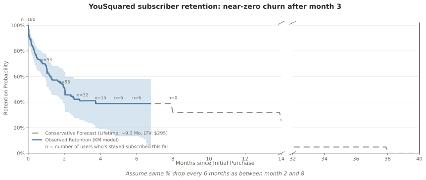

Near-Zero Churn After Month 3
YouSquared · Subscriber Retention
Self-serve Pro / Elite subscribers · Kaplan–Meier + stabilized-core forecast · as of 2026-01-26
Blended Subscriber LTV
$295
9 month average lifetime · weighted ARPU $32
Aligns with LTV:CAC dashboard Solo LTV ($34 monthly ARPU × 7 mo ≈ $238); our Kaplan–Meier model adds ~$57 from the stabilized tail.
Subscribers
180
all-time paying
Active today
112
paying this month
Weighted ARPU
$32
active-user mix
Avg Lifetime
9 mo
forecast integral
Retention curve · observed + forecast
180 subscribers · 86 churned · 94 censored

Stabilized-core anchors
S · Month 2
46%
after bad-fit filter
S · Month 8
39%
stabilized core
Absolute Drop · Mo 2 → 8
7 pp
≈ 1 pp / month
Forecast · zero month
Mo 38
extrapolated cutoff
Method & caveats
- Cohort — every user with an
rc_initial_purchase_event. Start = first initial-purchase timestamp; cancel = first rc_cancellation_event; active users are right-censored at the latest event in the dataset.
- Observed KM — standard step-down estimator with 95% Beta-distributed confidence intervals. Intervals enforced monotone non-increasing.
- Stabilized-core forecast — months 0–8 follow the KM curve; from month 8 onward we step down by the absolute drop observed between months 2 and 8, every 6 months, until zero. This is materially more conservative than exponential decay but more realistic than flat survival for a cohort where bad-fit users filter out by month 2.
- Weighted ARPU — per active user, take the revenue of their latest
rc_initial_purchase_event or rc_renewal_event; annual plans divided by 12. Missing revenue is imputed from product_id (elite → $60, pro → $30, fallback $30). 16 of 112 active users fell through to fallback — all are pro.montly subscribers whose latest purchase/renewal event dropped its product_id; $30 is the correct price. No Team plans appear in this dataset (Team is custom-contract, tracked separately in the LTV:CAC dashboard).
- LTV — weighted ARPU × area under the dense forecast curve, rounded. All displayed metrics are rounded to whole units.